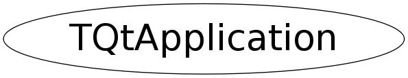

class TQtApplication
TQtApplication - Instantiate the Qt system within ROOT environment Instantiate the Qt package by createing Qapplication object if any
Function Members (Methods)
public:
| TQtApplication() | |
| TQtApplication(const char* appClassName, int& argc, char** argv) | |
| virtual | ~TQtApplication() |
| static TClass* | Class() |
| static TQtApplication* | GetQtApplication() |
| virtual TClass* | IsA() const |
| static bool | IsThisGuiThread() |
| static Int_t | QtVersion() |
| virtual void | ShowMembers(TMemberInspector& insp) |
| virtual void | Streamer(TBuffer& b) |
| void | StreamerNVirtual(TBuffer& b) |
| static bool | Terminate() |
private:
| TQtApplication(const TQtApplication&) | |
| void | CreateGUIThread(int& argc, char** argv) |
| static void | CreateQApplication(int& argc, char** argv, bool GUIenabled) |
| void | operator=(const TQtApplication&) |
Data Members
protected:
| static TQtApplication* | fgQtApplication |
Class Charts
{kind=link}
{kind=link}
{kind=link}
{kind=link}

Function documentation
TQtApplication(const char* appClassName, int& argc, char** argv)
void CreateQApplication(int& argc, char** argv, bool GUIenabled)
Initialize the Qt package Check the QT_BATCH environment variable to disactivate Qt GUI mode
void operator=(const TQtApplication& )
TQtApplication(const TQtApplication& )